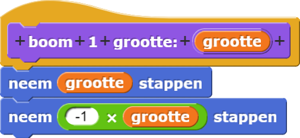
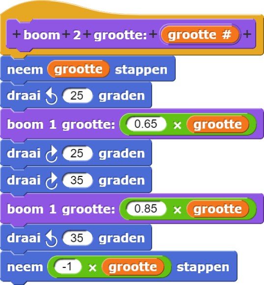
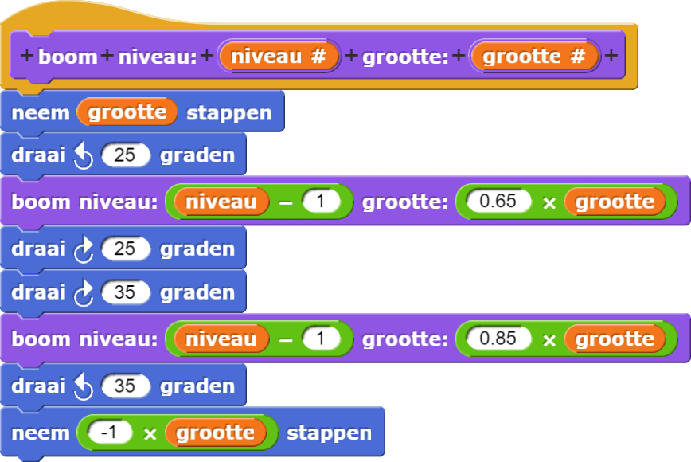

Recursieve boom
Het patroon van vertakkingen heeft bij veel planten een fractale structuur: de kleinere
delen lijken op miniatuur kopieën van de hele plant.
Een fractaal is een patroon dat zich oneindig herhaald. Het
bestaat uit meerdere kopieën of kleine variaties van dezelfde vorm. In deze afbeelding heeft de groene
tak ongeveer dezelfde
vorm als het hele plaatje.

In deze les, ga je een boom bouwen met blokken binnen blokken om takken te maken. Elke tak wordt in essentie een kleinere kopie van dezelfde boom.
-
Bouw het eerste niveau:
-
Maak dit blok:

Dit ziet er lachwekkend simpel uit, maar het wordt straks interessanter. -
Laat de sprite naar boven wijzen, zet de pen neer en voer
uit.
Dit zou het resultaat moeten zijn::

 Waar begint je sprite? Welke kant wijst hij op? Waar stopt hij?
Waar begint je sprite? Welke kant wijst hij op? Waar stopt hij?
-
Maak dit blok:
- Bouw
die gebruikt maakt van
voor z'n zijtakken.
 - Schrijf de exacte plaats en richting op van de sprite op het moment dat de eerste
boom 1stopt. Waarom is dat belangrijk voorboom 2om te werken?
"H7L1-Boom"
boom 1 gebruiken om de takken van boom 2 te tekenen is
een vorm van abstractie.
Staat-transparantie - alles (sprite, pen, enzovoort) precies terugzetten
zoals aan het begin - is belangrijk als je blok afhankelijk is van andere blokken. Meestal betekent dit dat
je de sprite op dezelfde plek en richting moet terugzetten en de pen op dezelfde kleur en grootte als aan
het begin.
- Maak een
boom 3blok dat hetboom 2blok gebruikt als zijtakken. - Maak een
boom 4blok dat hetboom 3blok gebruikt als zijtakken. -
Als je het leuk vindt, maak dan ook een
boom 5blok waarin je hetboom 4blok gebruikt. uitvoeren moet het volgende resultaat leveren::


Deze blokken zien er allemaal hetzelfde uit, behalve dat boom 5 gebruik maakt van
boom 4, terwijl boom 4 gebruik maakt van boom 3, enzovoorts. We
kunnen ons afvragen of we al deze blokken kunnen vervangen door een enkel boomblok, waarbij een parameter
het veranderende aantal aangeeft.
Als je een blok in zichzelf gebruikt, heet dat recursie.
- Hier zie je het algemene idee voor de recursieve recursieve versie van
boom. Maak dit zelf:
 -
Voer nu
boom niveau 9 grootte: 50uit. Het werkt nog niet. Dit is wat je ziet:

 Probeer de fout in het script te vinden. Wat gaat er mis?
Probeer de fout in het script te vinden. Wat gaat er mis?